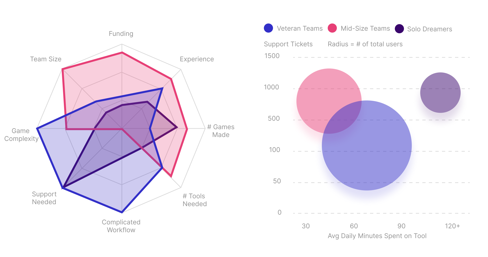

🎮 I built data-backed personas of indie game devs using user segementation.
[Figure 6] The data in this figure is faked for company privacy.
Silos are everyone’s worst nightmares, your impact is small and it’s easy to lose sight of the bigger picture. Our company lacked a unified understanding of our users across the multiple teams. I spearheaded the creation of data-backed user personas, linking our wide-ranging teams to a single source of truth.
I started with a quantitative survey of indie game creators designed to uncover the diversity within our user base, asking about everything from their development tools and workflows to their motivations, goals, and challenges.
User segments emerged through k-means clustering, revealing distinct groups with shared needs, behaviors, and frustrations. To fill in the gaps and bring these personas to life, I conducted eight in-depth interviews for each identified segment. I created a central repository of data-backed user personas that became common language across teams, a step toward ending the silo.
#explanatorySequentialDesign #userSegmentation
Note: I take company privacy seriously, contact me to go over redacted case studies.